RU.The Rhythm of Rest.
A pre-arrival sleep profile for voco Scenia Bay Nha Trang by IHG, developed through hospitality research, service strategy and a guest-facing digital prototype.

From hotel positioning
to a practical service.
voco Scenia Bay already positions itself around coastal calm, personalisation and rest. RU explored how that positioning could translate into a practical pre-arrival service.
The concept moves selected comfort preferences earlier in the journey, allowing the room to be prepared before arrival rather than relying only on during-stay requests.
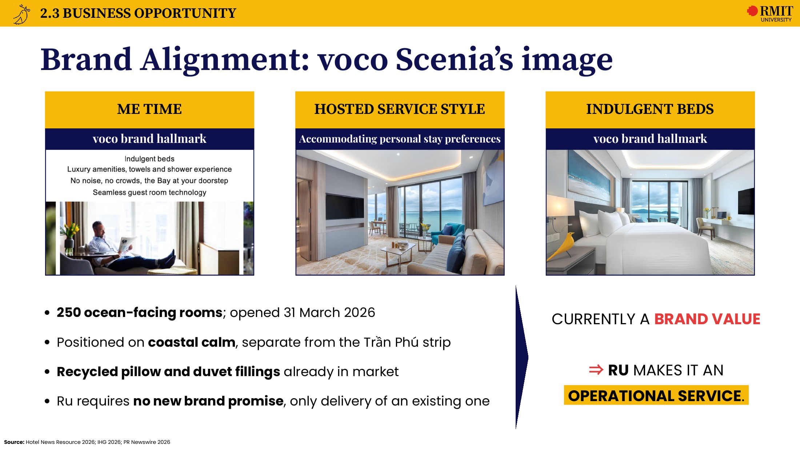
RU connects voco Scenia Bay's “The New Rhythm at the Bay” positioning with a personalised pre-arrival sleep profile.
I developed the name RU — The Rhythm of Rest to connect with the hotel's “New Rhythm” language and the Vietnamese word ru, associated with lulling and rest.
What I led
and built.
I was the team leader for this four-person project and co-developed the central concept with a teammate. My main responsibilities were Business Opportunity, Customer Needs, Competitor Comparison and leading the digital experience prototype.
I also built the RU website, contributed to the naming and visual direction, and coordinated the team toward the final client pitch.
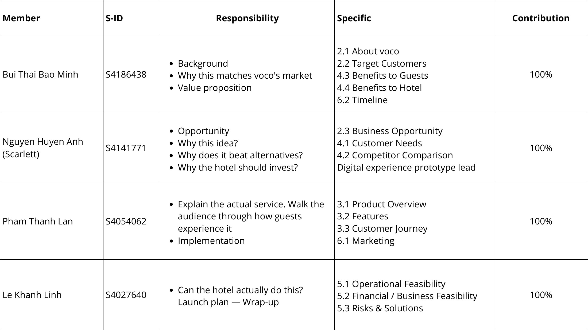
A pre-arrival
sleep profile.
RU is a pre-arrival sleep profile that captures how a guest prefers to wind down before they reach the hotel. The service combines six personalisation choices: pillowcase, scent, evening tea, room temperature, lighting and sound.
The result is not a larger amenity menu. It is a prepared environment, designed to reduce guest effort and make personalisation feel built into the stay.
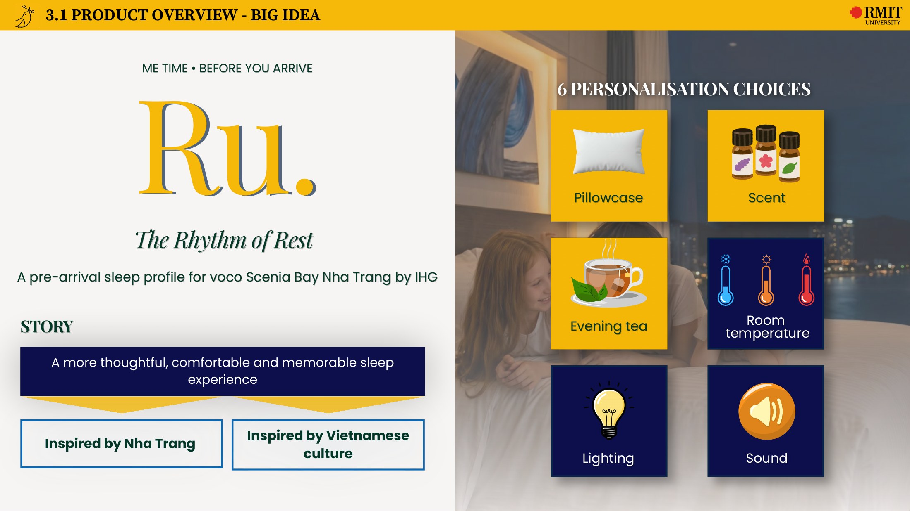
Why the service
made sense.
The research focused on how guests currently manage comfort needs, where hotel personalisation remains reactive, and how established hospitality brands structure sleep-related services.
A key insight was that the opportunity was not simply to offer more choices, but to reduce the effort required to access them.
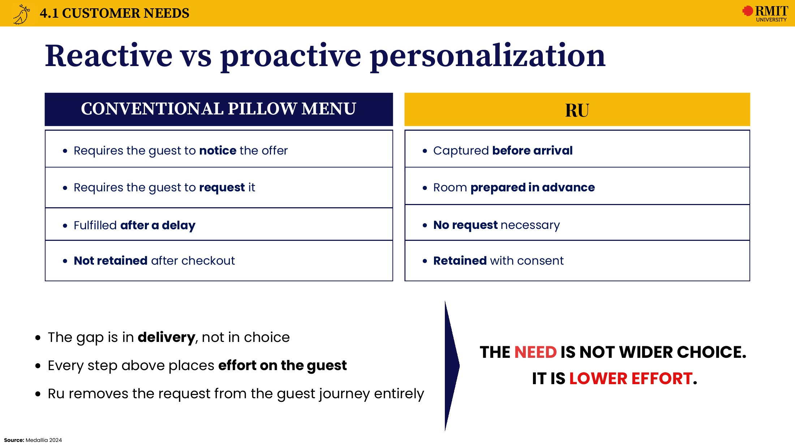
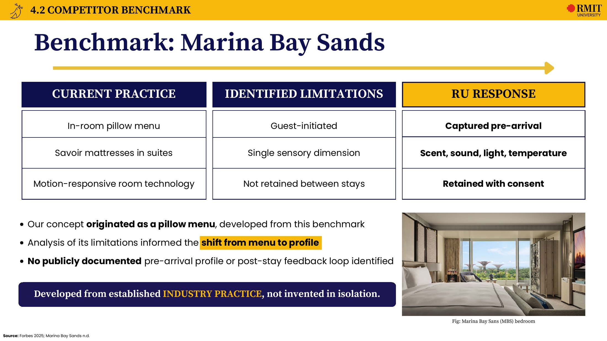
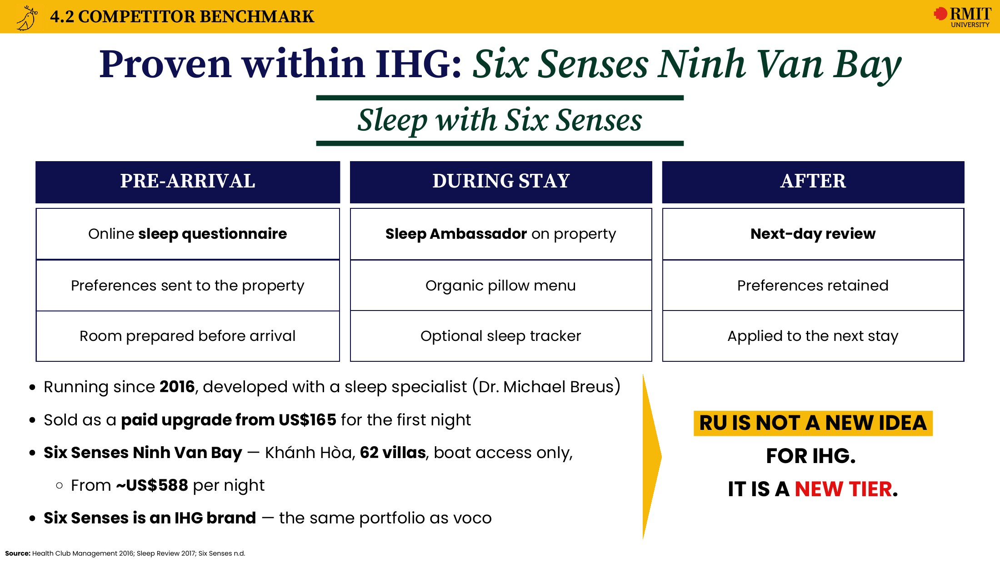
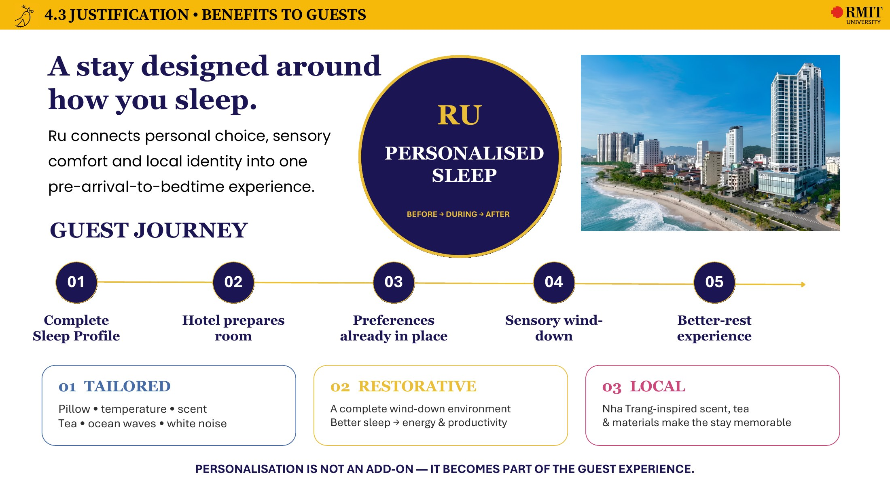
Making the service
tangible.
I designed and built a guest-facing RU prototype to demonstrate how the pre-arrival sleep profile could work in practice. It supported the pitch by making the proposed journey easier to understand.
The prototype also gave reviewers a working touchpoint to explore outside the presentation deck.
View the RU
website.
Explore the prototype used to communicate the proposed pre-arrival experience.
OPEN LIVE PROTOTYPE↗Client pitch
& outcome.
Our Hanoi-based team presented RU online to the client panel in Saigon. The project received Second Runner-up, placing in the Top 3 of six finalist teams in the voco Scenia Bay Nha Trang by IHG client pitch.
After the pitch, Course Coordinator Dr Justin Matthew Pang asked for the slides to showcase the project at Saigon South Experience Day.
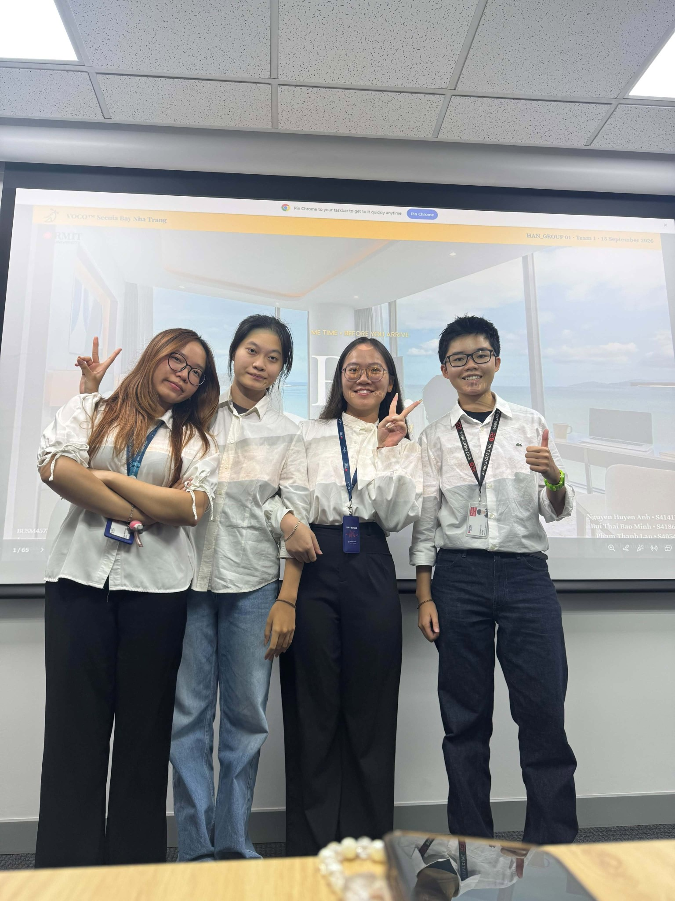
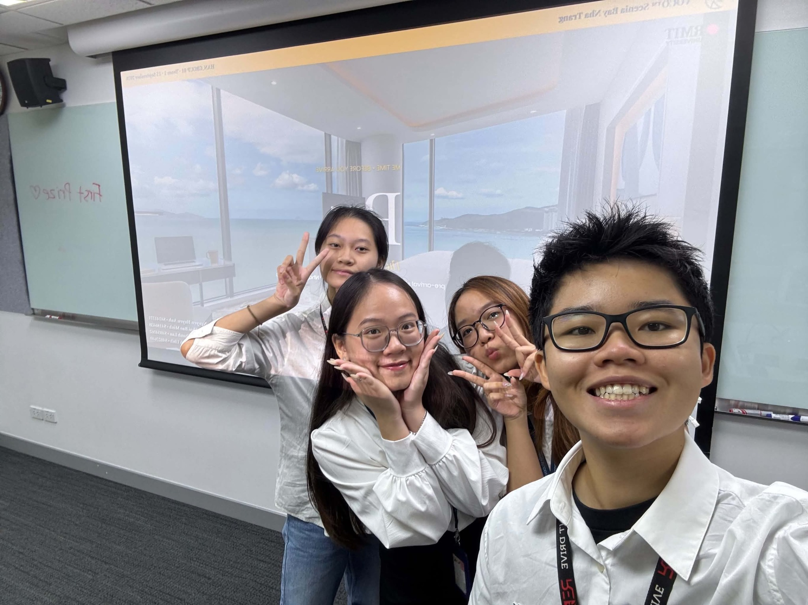
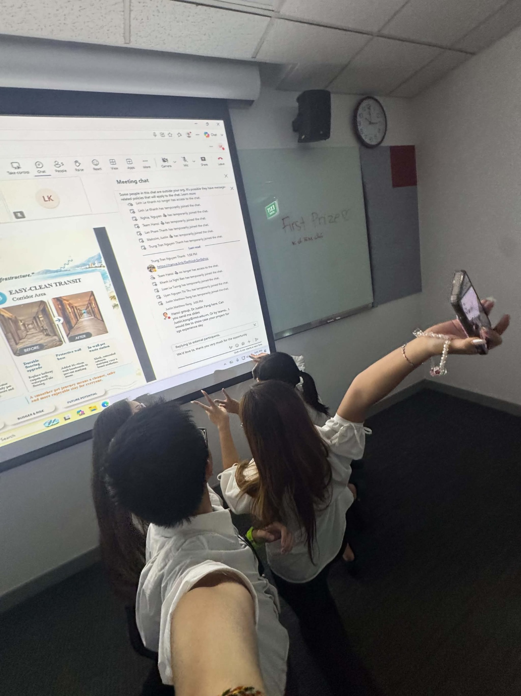
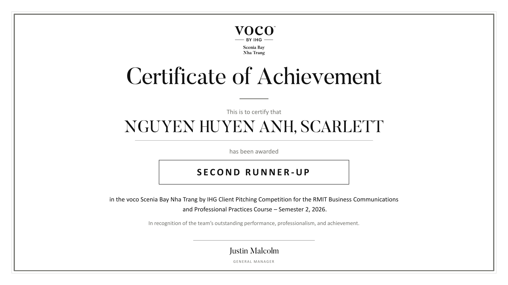
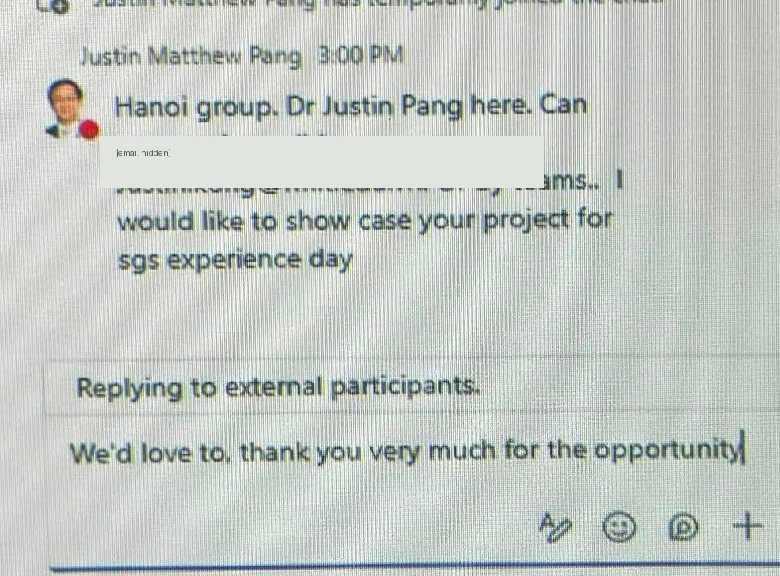
Full project
files.
The full deck contains the research, service features, feasibility, implementation plan and appendices behind RU.